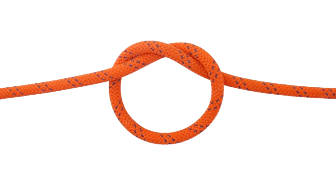
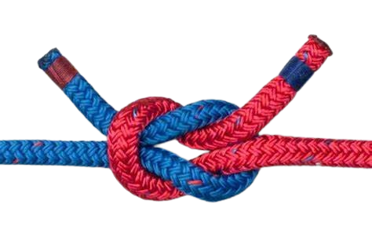

| Nome |
Uso |
Exemplo |
| Nó simples |
Este nó é a base para outros nós, e por se tratar apenas de uma volta é o nó mais fácil e rápido de ser feito, não é muito usado por marinheiros pois quando molhado ou quando é submetido a muita tensão fica difícil de ser desatado. |
 |
| Nó direito |
Serve para unir dois cabos de diâmetros iguais.
Para confirmar sua utilidade, use-o para unir dois cabos de diâmetros bem diferentes, e veja se funciona. |
 |
| Volta do Fiel |
Nó inicial ou final de amarras. Não corre lateralmente e suporta bem a tensão. Permite amarrar a corda a um ponto fixo. |
 |
| Lais de guia |
É um nó fácil de se fazer, pois tem poucas voltas, é estável e resistente, em geral é feito de forma que fique um laço fixo em uma das extremidades da corda, muito útil para içar animais, pessoas ou objetos de modo que não aperte quando submetido a tenção, após o uso é fácil de desmanchar o nó, em cordas muito rijas não tem utilidade pois as voltas não se acomodam e não oferece segurança. |
 |